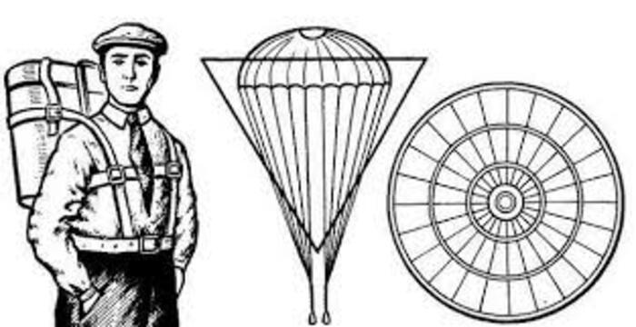

Актёр, который спас лётчиков
24 сентября 1910 года, петербургский аэродром. На празднике воздухоплавания тысячи зрителей смотрят в небо. Один из лучших авиаторов, капитан Лев Мациевич, поднимается на 400 метров — и его аэроплан разваливается прямо в воздухе. Спастись нечем: парашютов в авиации тогда не было.
На праздник пришёл актёр, а ушёл — изобретатель.

В толпе стоит актёр Народного дома Глеб Котельников. Эта смерть его не отпускает. Он решает: у лётчика должно быть спасение, которое всегда при нём.
Идея из платка. Рассказывают, что подсказку дал дамский шёлковый платок — маленький, а разворачивается в целое полотно. Историки спорят, было ли так, но шёлк стал ключом: вместо тяжёлого брезента — лёгкая ткань, что прячется в компактный ранец.
РК-1. Купол из шёлка в ранце за спиной, пружины, вытяжное кольцо. Дёрнул — купол выброшен в поток и раскрылся. Первый в мире ранцевый парашют свободного действия: раскрытие зависит от человека, а не от самолёта.

Иван Иванович. Манекен для испытаний Котельников с юмором звал Иваном Ивановичем — 80-килограммовую куклу роняли с крыши, с воздушного змея и с аэростата. 6 (19) июня 1912 года под Петербургом РК-1 сработал безупречно.
Горькая часть. Дома изобретение отвергли: великий князь счёл, что с парашютом лётчики будут прыгать, бросая дорогие аэропланы. Патент пришлось брать во Франции, и первый прыжок человека в 1913-м сделали тоже за границей — в Руане.

А ещё парашют — не единственное, что он придумал. После РК-1 Котельников создал целое семейство парашютов и подарил их все своей стране.